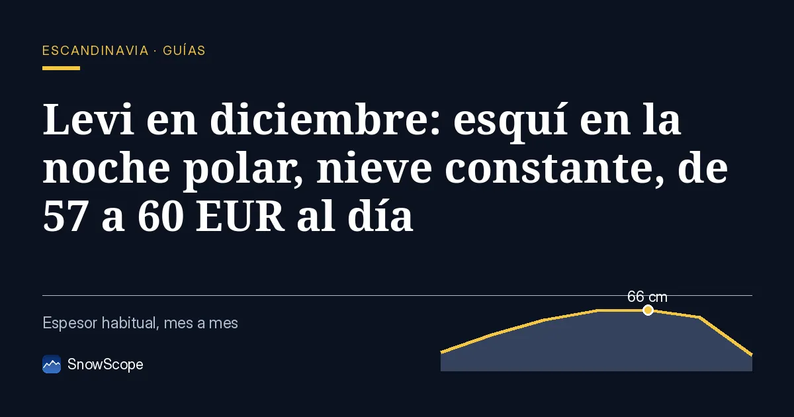
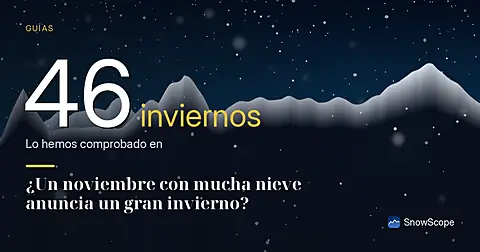

Levi en diciembre: esquí en la noche polar, nieve constante, de 57 a 60 EUR al día
Levi es de los pocos sitios de esta serie donde la nieve de diciembre ha crecido en vez de menguar. En nuestros 46 inviernos de histórico, la media de diciembre pasó de 41 cm en los primeros 15 inviernos a 45 cm en los últimos 15, y todas las semanas de Navidad de los últimos 15 inviernos tuvieron al menos 30 cm. El forfait de día cuesta 60 EUR en la estación, o 57 EUR en línea si reservas con al menos 14 días de antelación.
Consulta la previsión de nieve en tiempo real de Levi en la app SnowScopeEspesor de nieve, alertas de nieve polvo y mapa 3D, gratis.
Principios de diciembre
Levi es un fell, una colina redondeada de Laponia, con remontes de 197 m a 530 m, 51 km de pistas cartografiadas y 27 remontes. Como la colina es baja y suave, nuestro histórico da un solo valor para toda la estación. Del 1 al 7 de diciembre, el 57 % de los inviernos tenía 30 cm o más; el primer día habitual con 30 cm es el 27 de noviembre.
Principios de diciembre es también el comienzo de la noche polar: en esta época el sol apenas asoma sobre el horizonte, y durante parte de diciembre no sale. Unas horas la luz es azul y rosa, y se esquía sobre todo en penumbra.


Mediados de diciembre
La semana del 15 al 21 de diciembre la parte de inviernos con 30 cm sube al 83 %. Un 15 de diciembre típico tiene 38 cm; un año flojo (1 de cada 10), 26 cm; uno bueno, 52 cm. Esa horquilla estrecha es la marca de Laponia: rara vez profunda, rara vez pelada. En ninguno de nuestros 46 inviernos el suelo estaba sin nieve el 15 de diciembre.
La semana de Navidad
La semana de Navidad es la mejor del mes: el 91 % de los inviernos con 30 cm o más y unos 43 cm típicos el 24 de diciembre. No esperes nieve polvo profunda: solo el 2 % de los inviernos tenía 60 cm o más esa semana. Espera nieve fría, pisada y fiable. El invierno pasado había 55 cm el 24 de diciembre.
Antes y ahora
Mientras la mayoría de estaciones alpinas de esta serie perdieron nieve en diciembre, Levi ganó un poco. La parte de semanas de Navidad con 30 cm subió del 87 % en los primeros 15 inviernos al 100 % en los últimos 15. Muy al norte, un invierno más templado puede seguir siendo lo bastante frío para nevar, y algo más húmedo.
La cuenta
La tarifa oficial 2026-27 de Levi da 60 EUR por el día adulto en la estación y 57 EUR en línea reservando con al menos 14 días de antelación, válido desde el 1 de diciembre. Es uno de los precios de día fijos más bajos de esta serie.
Frente a Ylläs
Ylläs, el fell vecino al oeste, es casi igual en diciembre: 38 cm un 15 de diciembre típico y el 87 % de inviernos con 30 cm la semana del 15 al 21 de diciembre. Su forfait de día cuesta 60 EUR normalmente y 55,50 EUR en temporada baja hasta el 11 de diciembre, y vende un forfait de 7 días a 254,50 EUR en temporada baja.
Para una semana a principios de diciembre, el de 7 días de temporada baja de Ylläs es el billete más barato; para una escapada más corta y más remontes en un solo sitio, Levi.
Consejos para esquiadores
- Reserva en línea con al menos 14 días de antelación: 57 EUR en vez de 60 EUR al día.
- Elige mediados de diciembre o Navidad: la probabilidad de 30 cm sube del 57 % de la primera semana al 83 % y al 91 %.
- Prepárate para frío intenso y oscuridad: buen frontal para pasear, manoplas calientes y protección para la cara.
- Fuera de pista en los fells: consulta la información local de aludes y tiempo antes de salir de las pistas señalizadas.
Más mapas (sitios externos)
Referencias y créditos
- Levi: official lift-pass prices (2026-27), checked 13 November 2026 www.levi.fi/en/ski/levi-ski-resort-services/skipasses/
- Ylläs: official lift-pass prices (2026-27), checked 13 November 2026 ski.yllas.fi/en/lift-tickets/yllas-lift-ticket-price-list/
Sobre estas cifras
Cifras de nieve: histórico de nieve de SnowScope, 46 inviernos pasados (1980-81 a 2025-26) a las alturas de la estación, corregido por altitud (una estimación para una zona, no partes de la estación); «buena nieve» = 30 cm o más en el suelo de media en la semana. Mapa: nuestro espesor habitual el 15 de diciembre repartido sobre el relieve según la altura. Pistas y remontes: cartografía OpenSkiMap. Forfaits: tarifas oficiales de las estaciones, comprobadas el 13 de noviembre de 2026; los precios pueden cambiar.
Boletines oficiales de aludes: EAWS – European Avalanche Warning Services
Citar este informe
Para investigación, docencia o prensa: cifras y gráficos reutilizables libremente bajo CC BY 4.0 con esta cita.
SnowScope (2026), Levi en diciembre: esquí en la noche polar, nieve constante, de 57 a 60 EUR al día, https://snowscope.app/blog/es/2026/11/levi-december-skiing-polar-night-snow-price.html, consultado el 2026-11-14
SnowScope (Atlas Labs). (2026, November 14). Levi en diciembre: esquí en la noche polar, nieve constante, de 57 a 60 EUR al día. SnowScope snow reports. https://snowscope.app/blog/es/2026/11/levi-december-skiing-polar-night-snow-price.html
BibTeX
@misc{snowscope2026levidecemberskiingpolarn,
author = {{SnowScope (Atlas Labs)}},
title = {Levi en diciembre: esquí en la noche polar, nieve constante, de 57 a 60 EUR al día},
year = {2026},
month = nov,
howpublished = {\url{https://snowscope.app/blog/es/2026/11/levi-december-skiing-polar-night-snow-price.html}},
note = {Published 2026-11-14 13:29 UTC; accessed 2026-11-14}
}· CC BY 4.0 · Métodos, datos y herramientas →
Levi: nieve y temperatura según la altura, este invierno vs el pasado (herramientas) →
Sigue Levi
Gratis: un aviso cuando llega la nieve y la previsión cada mañana.
Más partes de nieve

Hemos comparado la nieve del 10 de noviembre con la mayor altura de nieve de cada invierno en 46 estaciones de esquí durante 46 inviernos. Un comienzo nevado ayuda, pero menos de lo que creen muchos esquiadores.

Esquía los 131 km de pistas en la Forêt Blanche este diciembre con un pase de seis días por 298 EUR.